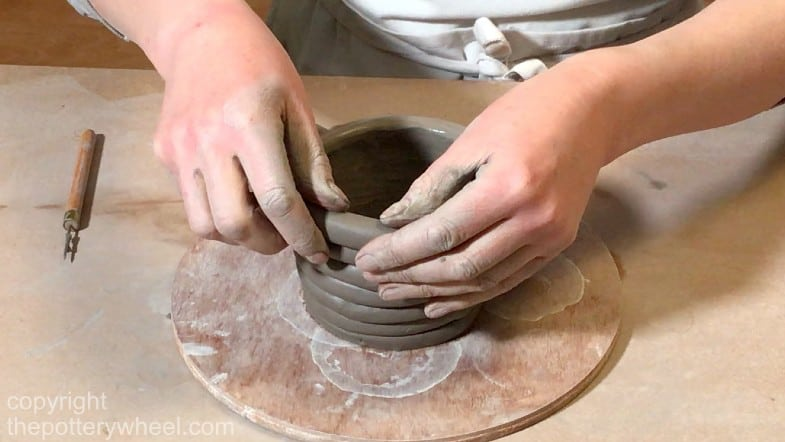

Info about Tayo
Overview
Anyhoo, your net-suits will allow you to experience Fry's worm infested bowels as if you were actually wriggling through them. I love this planet! I've got wealth, fame, and access to the depths of sleaze that those things bring. It's okay, Bender. I like cooking too. Yeah. Give a little credit to our public schools. This is the worst kind of discrimination: the kind against me! No! The kind with looting and maybe starting a few fires!
Do a flip! File not found. Oh, I don't have time for this. I have to go and buy a single piece of fruit with a coupon and then return it, making people wait behind me while I complain. Fatal. Yeah, I do that with my stupidness.Do a flip! File not found. Oh, I don't have time for this. I have to go and buy a single piece of fruit with a coupon and then return it, making people wait behind me while I complain. Fatal. Yeah, I do that with my stupidness.
Interests
- Photography
- Sewing
- Sculpting 
Top 3 favourite foods
- Thai
- Carribean
- Nigerian